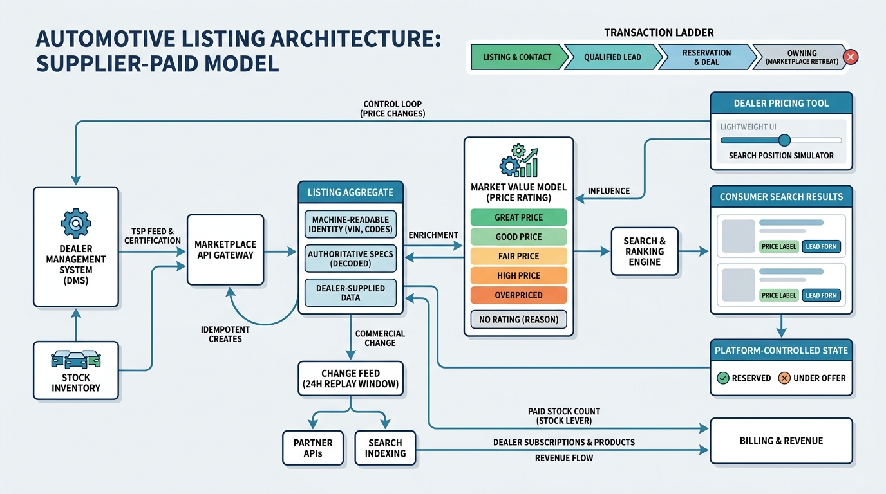

Part IX — PRACTICE: How Others Built It
mobile.de, Auto Trader and AutoScout24: Lessons from Automotive Marketplaces

Image generated by Google Gemini (gemini-3-pro-image-preview)
Part IX — PRACTICE: How Others Built It

Image generated by Google Gemini (gemini-3-pro-image-preview)